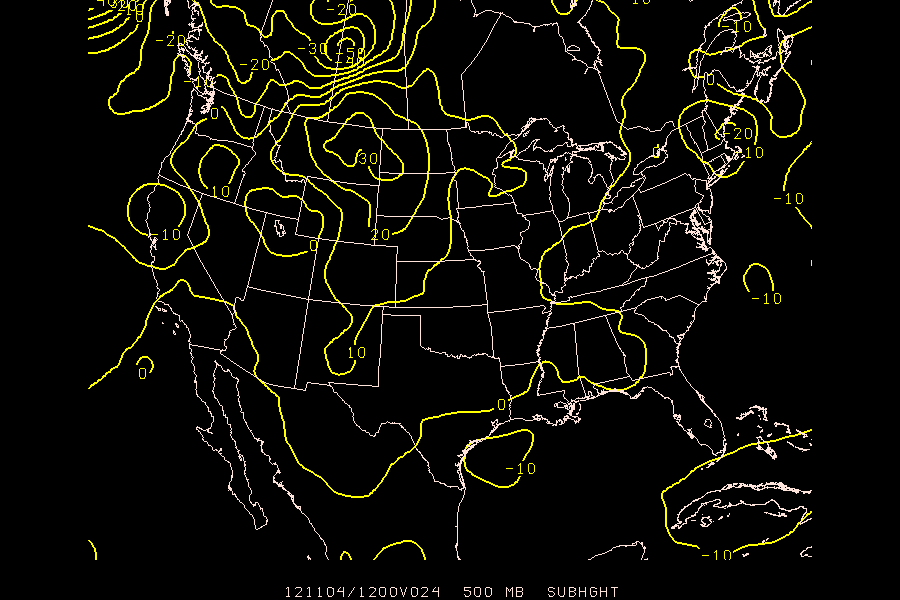
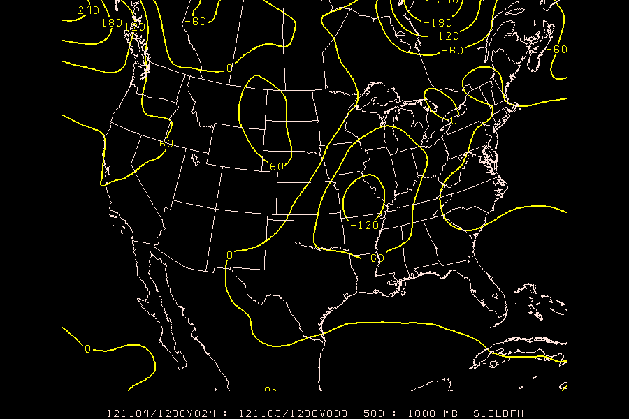
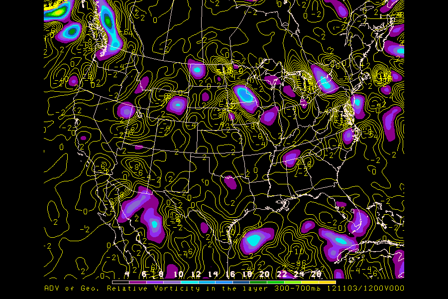
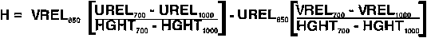
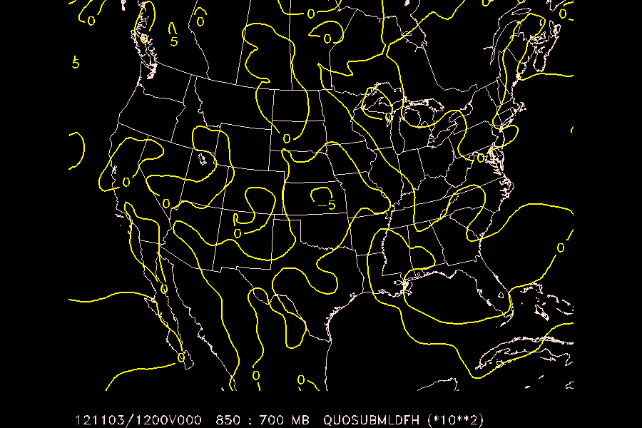

Using the ability to open multiple input files, compare the 24 hour 500mb height forecast from the GFS and ETA models by computing the difference of the height fields.
- define two files in
GDFILEusing+ - reference the second of the two files by using the in-line modifier
+2 allow
CINT = 0for automatic contouringGDATTIM = f024 GLEVEL = 500 GVCORD = pres GFUNC = sub(hght,hght+2) GDFILE = eta + gfs CINT = 0 LINE = 5 MAP = 3/1/1 TITLE = 1 DEVICE = xw SATFIL = RADFIL = PROJ = str/90;-100;0 GAREA = us CLEAR = YES PANEL = 0 TEXT = 1 SCALE = 999 LATLON = 0 HILO = HLSYM = CLRBAR = CONTUR = 3/3 SKIP = 0 FINT = FLINE = CTYPE = c LUTFIL = default STNPLT = GEMPAK-GDCNTR>r

Produce a contour plot of the 1000-500mb change in thickness between the 0 and 24 hour forecast ETA fields.
- Use the layer difference function
ldf()along with the subtraction functionsub(X,Y)(see theGPARMman page for help) You'll need to specify the exact times for the paramaters used in the calculation (see "in-line modifiers" above).
GDATTIM = f000 GLEVEL = 500:1000 GVCORD = pres GFUNC = sub(ldf(hght^f024),ldf(hght^f000)) GDFILE = eta CINT = 60 LINE = 5 MAP = 1 TITLE = 1 DEVICE = xw SATFIL = RADFIL = PROJ = str/90;-100;0 GAREA = us CLEAR = y PANEL = 0 TEXT = 1.3/22/1/hw SCALE = LATLON = 0 HILO = HLSYM = CLRBAR = CONTUR = 3/3 SKIP = 0 FINT = FLINE = CTYPE = c GEMPAK-GDCNTR>r

Contour the advection of 500mb geostrophic relative vorticity by the thermal wind in the 300mb to 700mb layer (i.e. Trenberth's Q-G formula).
functions you'll need to use:
- advection:
adv() - vorticity:
vor() - thermal wind:
thrm() - use in-line modifiers for
hght@300:700to calculate the thermal wind you'll need to adjust the contour interval down from 60 (try
CINT = 2//2)GDATTIM = f000 GLEVEL = 500 GVCORD = pres GFUNC = adv(vor(geo),thrm(hght@300:700)) GDFILE = eta CINT = 2//2 LINE = 5 MAP = 6 TITLE = 5/-2/ADV of Geo. Relative Vorticity in the layer 300-700mb ~ DEVICE = xw SATFIL = RADFIL = PROJ = str/90;-100;0 GAREA = us CLEAR = y PANEL = 0 TEXT = 1.3/22/1/hw SCALE = LATLON = 0 HILO = HLSYM = CLRBAR = 1/h/lc/.5/.5;.01 CONTUR = 3/3 SKIP = 0 FINT = 2/4 FLINE = 0;30-7 CTYPE = c/f GEMPAK-GDCNTR>

Calculate and plot helicity for the 1000mb - 700mb layer using the formula:

functions you'll need to use:
- quotient:
quo(X,Y) - subtraction:
sub(X,Y) - multiplication:
mul(X,Y) - layer difference:
ldf() - you'll need to adjust the contour interval to
CINT = 5
 First we must rewrite the formula for helicity in GEMPAK GPARM notation!
First we must rewrite the formula for helicity in GEMPAK GPARM notation!
In "psuedocode", the forumla would look like:
H = vrel@850 * (urel@700 - urel@1000)/(hght@700 - hght@1000)
- urel@850 * (vrel@700 - vrel@1000)/(hght@700 - hght@1000)
Substituting ldf() for the hght, urel and vrel differences, and using our GLEVEL = 700:1000 definition:
H = vrel@850 * ( ldf(urel) )/( ldf(hght) )
- urel@850 * ( ldf(vrel) )/( ldf(hght) )
Factoring out the common denominator:
H = ( vrel@850 * ldf(urel) - urel@850 * ldf(vrel) )
% ldf(hght)
Now using the sub(), mul() and qou() mathematical operators:
H = quo( sub(mul(vrel@850,ldf(urel)),mul(urel@850,ldf(vrel))), ldf(hght) )
So the full entry to GDCNTR would be:
GEMPAK-GDCNTR>l
GDATTIM = f000
GLEVEL = 700:1000
GVCORD = pres
GFUNC = quo(sub(mul(vrel@850,ldf(urel)),mul(urel@850,ldf(vrel))),ldf(hght))
GDFILE = eta
CINT = 5
LINE = 5//2
MAP = 1
TITLE = 1
DEVICE = xw
SATFIL =
RADFIL =
PROJ = str/90;-100;0
GAREA = us
CLEAR = y
PANEL = 0
TEXT = 1.3/22/1/hw
SCALE = 2
LATLON = 0
HILO =
HLSYM =
CLRBAR = 1/h/lc/.5/.5;.01
CONTUR = 3/3
SKIP = 0
FINT = 2/4
FLINE = 0;30-7
CTYPE = c
GEMPAK-GDCNTR>r
